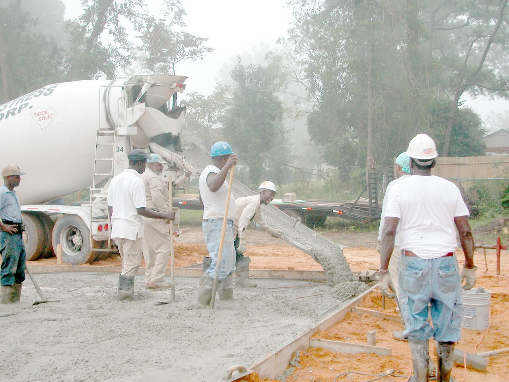

Mudjacking and Slabjacking: Concrete Leveling That Lifts Sunken Slabs
Slabjacking is the process of pumping material in under a sunken concrete slab to fill the void beneath it and lift the slab back toward level. You need it when driveway panels, sidewalks, patios, garage floors, porches or steps have settled unevenly, leaving trip edges, cracked joints and water pooling against the house instead of draining away. It is a repair for surface concrete only. A settled structural foundation is a different problem, and no amount of pumped material under a slab fixes it.
The vocabulary causes half the confusion in this corner of the trade. Slabjacking is the umbrella term for lifting a slab by injection. Mudjacking is the original method, which pumps a cement-and-soil slurry, and it is the word many contractors still use for the whole service. Polyjacking, also sold as poly lifting or foam jacking, injects expanding polyurethane foam instead. Concrete lifting and concrete leveling are plain-language labels that can mean either method. When you compare quotes, the first thing to pin down is which material each contractor is actually proposing.
This page compares the two materials head to head, walks through how the job is done, sets out what it costs per section and why, and covers the situations where lifting is the wrong spend. FoundationMatch is a matching service, not a contractor: we connect homeowners with local concrete lifting and foundation companies, and the price bands here come from published pricing guides rather than any one company's rate card.
Request a free inspection
Mudjacking vs polyjacking: the two ways to lift a slab
Mudjacking pumps a slurry of water, soil, sand and cement through holes drilled in the slab. The slurry fills the void, and continued pumping pressure lifts the slab in small increments while the crew watches levels. The material is cheap per cubic yard, which is why mudjacking handles big voids and large, thick slabs economically. Its weaknesses are weight and washout: the slurry itself is heavy, so on very weak soil it adds load to ground that already failed once, and if water is still flowing under the slab it can erode the fill over time.
Polyjacking injects a two-part polyurethane foam that expands under the slab, filling the void and lifting with controlled pressure. The foam is far lighter than slurry, sets within minutes and is closed-cell, so it does not absorb water or wash out. Holes are smaller and lifts can be finer, which suits interior floors and slabs next to finished surfaces. The trade-off is price per section and economics on huge voids: foam costs more per unit of fill, so a cavernous void under a big slab can make slurry the saner spend. Neither material fixes the reason the soil left in the first place.
In practice the choice often makes itself once the crew sees the job. A sunken driveway with a deep, washed-out void and a homeowner watching the budget is a mudjacking job almost every time. A settled slab inside a finished basement, a lift that has to be controlled to a fraction of an inch beside a door threshold, or a site where water keeps moving under the concrete pushes toward foam. Contractors who offer only one material will argue their material fits both cases; contractors who offer both tend to argue about the void, the water and the finish, which is the more useful conversation.
| Method | Cost per section | Typical lifespan | Back in use | Best for | Limits |
|---|---|---|---|---|---|
| Mudjacking (cement slurry) | $500–$1,500 | Commonly 5–10 years | Foot traffic quickly; vehicles after 24–48 hours | Large or thick slabs, big voids, budget-sensitive jobs | Heavy fill adds load to weak soil; larger drill holes; fill can erode if water still flows |
| Polyjacking (polyurethane foam) | $1,000–$2,500 | Foam is stable long-term; soil movement is the real limit | Minutes to set; usually same-day full use | Interior slabs, precise lifts, water-sensitive spots, small access | Costs more per section; uneconomical for very large voids |
What's the difference between mudjacking and slabjacking?
Slabjacking is the general term for lifting a settled slab by pumping material underneath it. Mudjacking is the original slabjacking method, using a wet slurry of soil, sand and cement. So every mudjacking job is slabjacking, but slabjacking can also mean polyurethane foam injection. When a contractor says slabjacking, ask which material they will pump, because cost, lifespan and hole size all follow that answer.
Which is cheaper, mudjacking or polyjacking?
Mudjacking is cheaper per section, at $500 to $1,500 in published guides, against $1,000 to $2,500 for polyurethane foam. The gap narrows or flips on small jobs with several tiny sections, where foam's speed and small holes save labour, and widens on large voids, where slurry's cheap volume wins. Compare per-section prices for the same sections, not two companies' different guesses about your slab.
How long does mudjacking last?
Published guides put a mudjacking lift at five to ten years before the slab may settle again. The foam in a polyjacking lift does not break down in the ground, and installers present it as the longer-lived material. In both cases the honest limit is the soil, not the fill: if water keeps eroding support or the subgrade keeps consolidating, either lift can lose level sooner than its headline figure.
How slabjacking works, step by step
The job starts with diagnosis, not pumping. A crew should work out how far each panel has dropped, whether the void beneath it is shallow or deep, and what removed the soil: erosion from a downspout, a leaking line, poorly compacted fill from construction, or soil that shrinks in drought. That last question decides whether the lift is a repair or a rental. Lifting over an active washout without fixing the water path underneath is the most common reason a lifted slab is back for a second lift within a few years.
The lifting itself is deliberately slow. Material goes in in short bursts, the slab rises a fraction at a time, and the crew stops at level rather than chasing the last fraction of an inch and cracking the panel. Most residential jobs, a driveway apron, a run of sidewalk, a garage floor, are completed in a few hours. Foam jobs finish faster on site because there is no slurry mixing and almost nothing to clean up; mudjacking jobs run longer but move more material per hour once set up.
Panels rarely drop evenly, and the pattern of the drop is diagnostic. A panel low at one corner usually means a localised void, often where a downspout discharges or a joint has been washing out. A whole run of sidewalk tilted toward the street suggests the original fill along the trench was never compacted. A slab that has dropped uniformly, staying flat but sitting two inches low, points to soil consolidating across the whole footprint, common over older utility trenches and filled ground. Crews read those patterns before drilling, because each one changes where the holes go and how much material the lift should take. A quote written without anyone looking at the pattern is guessing at the most important variable in the job.
- Assessment: the crew maps which panels have settled, checks for voids by sounding and drilling test holes, and looks for the water source
- Drilling: a pattern of holes is drilled through the slab, larger for slurry, small for foam
- Injection: material is pumped or injected in stages, filling the void first, then lifting in small increments
- Levelling: the slab is brought back to grade, checked against string lines or levels, and joints are realigned where possible
- Patching and cleanup: holes are patched, the surface is washed down, and wait times for traffic are confirmed
How disruptive is the mudjacking process?
Mudjacking is one of the less disruptive repairs you can buy. The crew needs access along the slab, drills a pattern of holes, pumps for a few hours and patches the holes the same visit. You can usually walk on the slab straight away and drive on it after a day or two. The mess is drilling dust and slurry splashes, which the crew washes down before leaving.
What slabjacking costs, and what moves the price
Published pricing guides put mudjacking at $500 to $1,500 per section and polyurethane foam lifting at $1,000 to $2,500 per section. A section is one bounded piece of work: a single driveway panel, a porch slab, a stretch of sidewalk. Most single-problem residential jobs are one to three sections, which is why typical invoices land well below structural foundation work. Minimum call-out fees exist, though, so a single tiny sidewalk panel can cost a larger share of the per-section band than a three-panel driveway does.
Four things move a quote inside the band. Void depth is the biggest: a panel dropped two inches over solid ground takes a fraction of the material of a panel bridging a washed-out cavity. Slab thickness and reinforcement decide drilling and lift control. Access decides whether equipment reaches the slab directly or material has to be pumped a long way from the street. And the cause matters commercially as well as technically: a contractor who prices in the downspout extension or grading fix that stops the erosion is quoting a repair, while one who only prices the lift is quoting an interval.
Run the published bands over a typical job to see the shape of a fair quote. A three-panel driveway lifted with slurry at mid-band rates works out to roughly $3,000, before any drainage correction; the same panels in foam land nearer $5,000, in exchange for smaller holes, a same-day return to use and a fill that water cannot erode. Neither figure is a quote for your slab. They are a sanity check: if a proposal for those three panels arrives at $9,000 with no void depth, access problem or extra work itemised to explain it, the itemisation, or another contractor, is the next step.
Is mudjacking worth it compared to concrete replacement?
Usually, yes, while the slab is in one piece and the soil problem is understood. Replacement means demolition, haulage, forming and pouring, at several times the cost of lifting, plus days of curing. Lifting at $500 to $2,500 per section wins on price and disruption for driveways, walks and patios. Replacement is the better spend when the concrete is cracked into fragments, spalled, or too thin to lift without breaking.
When slabjacking is not the right fix
The clearest wrong case is structural settlement wearing a slab's clothes. If the wall above the slab is cracking in a stair-step pattern, doors on that side of the house have drifted out of square, and floor levels inside are dropping toward the same corner, the footing has settled and the problem is underpinning, not lifting. Slabjacking the garage floor in that house levels a symptom for a season while the structure keeps moving. Any lifting contractor who spots those signs should say so and point you at a foundation inspection instead of a pump.
Condition sets the second limit. A slab that has cracked into multiple small pieces, or whose surface is spalling and crumbling, cannot be lifted as a unit; pumping under it raises some fragments and tilts others. The third limit is an untreated cause with force behind it: an active plumbing leak, a void still being excavated by runoff, or heaving expansive soil pushing up rather than settling down. Heave in particular fools people, because the slab edge is high rather than low, and adding fill underneath makes the eventual correction harder, not easier.
Age and build quality draw the last line. Very thin patio pours, slabs with no reinforcement that have already cracked along the control joints, and concrete that crumbles at the drill bit will not survive pumping pressure intact. Tree roots complicate things in the other direction: a root lifting a panel from below looks like settlement on the far side, and pumping against a living root wins a season at most. A reputable crew will tell you on the site visit when replacement is the honest recommendation, because a failed lift costs them a callback and costs you the price of both jobs.
My garage slab is sinking along the foundation wall. Is slabjacking enough?
Only if the footing beside it has stayed put and the slab alone has settled, which happens with poorly compacted fill under garage floors. If the foundation wall shows stair-step cracking, or the door from the garage into the house has started binding, suspect the footing as well. Get the structure inspected first; lifting a slab against a moving wall traps the slab and can crack it at the joint.
Can you lift a sunken slab yourself?
Plenty of DIY boards collect projects under headings like how to repair a sagging concrete slab, and small foam kits are sold for lifting a single step or a corner of a small pad. For a light, non-structural piece of concrete, a careful owner with a kit can sometimes recover a half-inch of drop. That narrow case is real, and it is where honest DIY advice stops. A slurry pump is not rental-shop equipment in most areas, the mix design matters, and the void under a slab is invisible until you drill: guess the volume wrong and you either underfill or keep pumping until the pressure finds the slab's weakest point.
Over-lifting is the characteristic DIY failure. Without staged pumping and constant level checks, pressure builds under one spot, the panel cracks across the middle, and a $900 lifting job becomes a replacement job. The second failure is lifting over a live leak or an open void that runs under the footing, sending material somewhere it can do harm. If the slab touches the house, carries a step people use daily, or sits anywhere near the foundation, the measurement and the stop judgement are again the product being bought, same as with pier work.
Can I lift a sunken concrete step or slab myself with a foam kit?
For one small, light slab, a store-bought foam kit and a patient afternoon can work, and plenty of owners document exactly that. The kit route fails as slabs get bigger, voids get deeper or the slab meets the house, because you cannot see the void, meter the pressure or check levels like a crew does. Crack the panel by over-pumping and the saving inverts into a replacement bill.
Frequently asked questions
How much does slabjacking cost per section?
$500 to $1,500 per section is the published range for mudjacking, and $1,000 to $2,500 per section for polyurethane foam lifting. A section usually means one slab panel or one clearly bounded area like a driveway apron or a porch. Depth of the void, slab size and access move you within the band. Any quote should state the section count and the method, in writing.
How soon can I drive on a slab after it has been lifted?
For mudjacking, the common guidance is to keep vehicles off the slab for 24 to 48 hours while the slurry sets and the patch material cures, though foot traffic is usually fine sooner. Polyurethane foam sets in minutes and lifted slabs are commonly back in full use the same day. Your contractor should give you the specific wait times for the material used, in writing.
Will the drill holes be visible after slabjacking?
Yes, the holes are patched but they do not disappear completely. Mudjacking uses holes roughly one to two inches across, filled with concrete that weathers to a slightly different shade, so on a driveway you will see a pattern of circles. Foam injection holes are much smaller, around five eighths of an inch. Colour matching improves with time but is rarely invisible on old, stained concrete.
Can slabjacking lift an interior floor slab?
Yes, interior slabs are lifted regularly, and polyurethane foam is usually the method chosen inside because the equipment is compact, the holes are small and there is little dust or slurry to clean up. The main constraints are access for the injection hose, protecting flooring finishes around the work area, and confirming the settlement is the slab itself rather than the structure above it.
Why did my slab sink again after it was lifted?
Repeat sinking almost always means the cause was filled over rather than fixed. Water is the usual suspect: a downspout, a leaking line or poor grading keeps washing fines out from under the slab, or the underlying soil keeps consolidating under the added weight. If the void reopens, find and stop the water or soil problem first, or the next lift, by any method, buys the same short interval.
Does slabjacking work on pool decks, steps and porches?
Yes, pool decks, steps, porches and sidewalks are among the most common slabjacking jobs, because they are light surface slabs with no structural load and their failure mode, a trip edge or water pooling, is exactly what lifting corrects. The limit is condition: a slab broken into many small, crumbling pieces has nothing left to lift as a unit and is a replacement job instead.
Related guides
Request a free foundation inspection
Tell us where you are and what you are seeing — a local specialist will call you back to schedule it.
Prefer to talk first? [Call-tracking phone number to be added before launch]